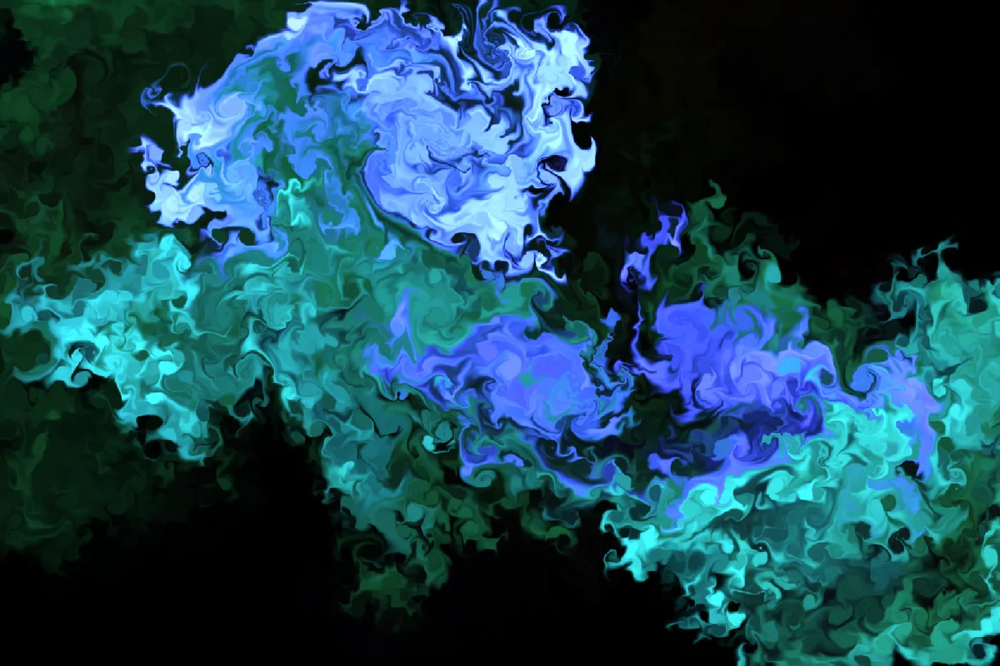
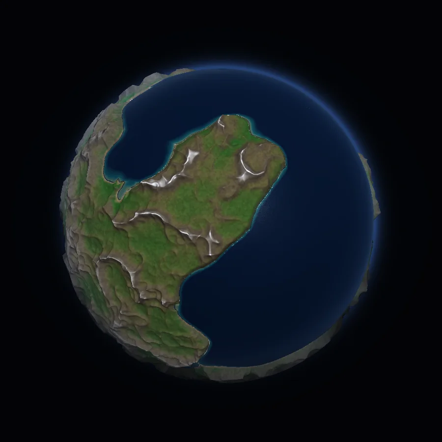
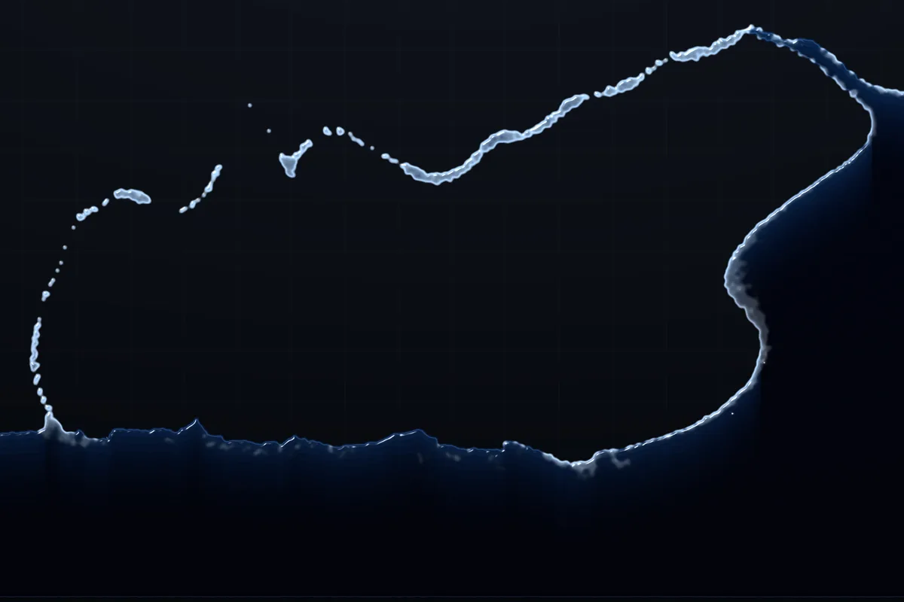
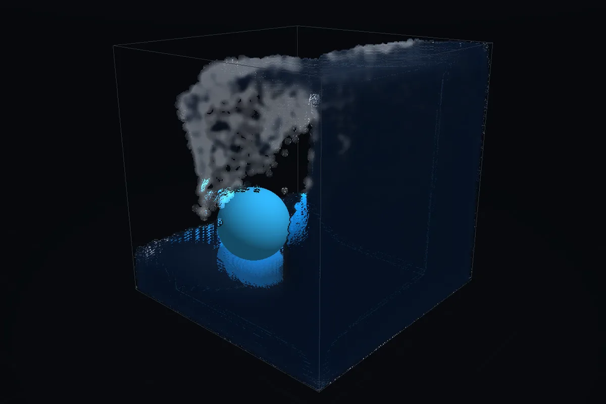
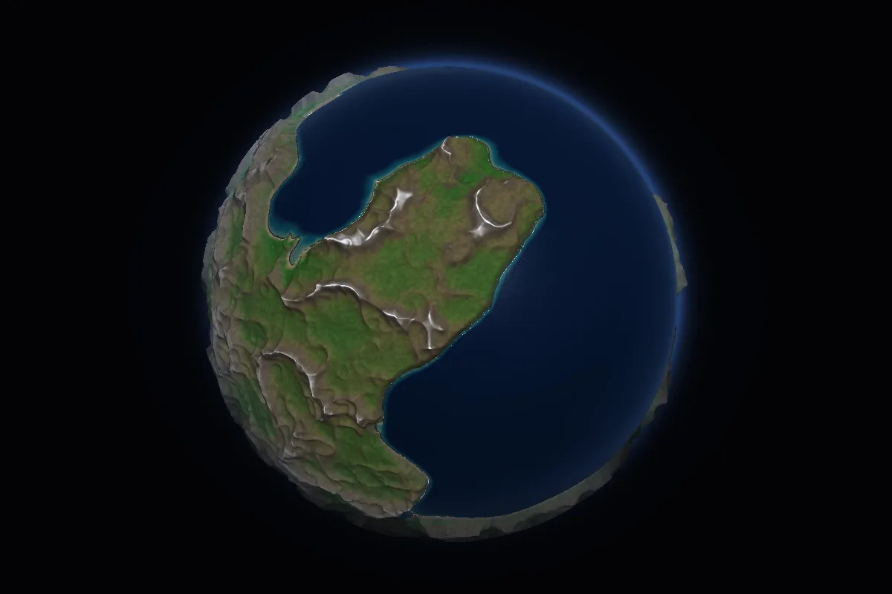

インク
1ドラッグした軌跡に沿って発光インクを流し込む2D流体。渦度強化を効かせているので、細い筆でも渦が渦を生む構造がはっきり出ます。
Fluid Lab
インクの渦、崩れる水、3Dの水槽、そして自転する惑星の水循環。 4種類の流体ソルバをWebGL2で実装して、ひとつの画面で切り替えられるようにしました。 ライブラリ依存ゼロ・単一HTMLファイル。インストールもビルドも不要で、リンクを開けば動きます。
要 WebGL2。フル品質には EXT_color_buffer_float が必要で、非対応環境ではCPUフォールバックで動作します。マウス操作前提のためデスクトップ推奨。

Modes
画面はすべて実際の動作画面です。サイドバーのアイコン、または数字キーで切り替わります。 各モードのパラメータ（重力・粘性・解像度など）はスライダーで動かしながら変えられます。

ドラッグした軌跡に沿って発光インクを流し込む2D流体。渦度強化を効かせているので、細い筆でも渦が渦を生む構造がはっきり出ます。

粒子と格子を行き来させるFLIP/PIC法の水槽。水面はメタボールで抜いているので、砕けた飛沫が粒として分離してから落ちてきます。

3D FLIPの立体水槽。メッシュを作らずスクリーンスペースで水面を描くので、飛沫の一粒までそのまま屈折して見えます。球体でかき混ぜられます。

球面の浅水方程式で全球の海を回す惑星モード。地形は毎回生成され、山に降った雨は谷を流れ下って川になります。月と太陽の潮汐、コリオリ力、季節つき。
Under the hood
シミュレーションの本体はJavaScriptと、文字列に埋め込んだGLSLです。 重い部分はできるだけフラグメントシェーダに逃がしています。
(h, u, v) をピンポン求積。地形テーブルと1セル1対1で対応readPixelsで読み戻してから川を刻む